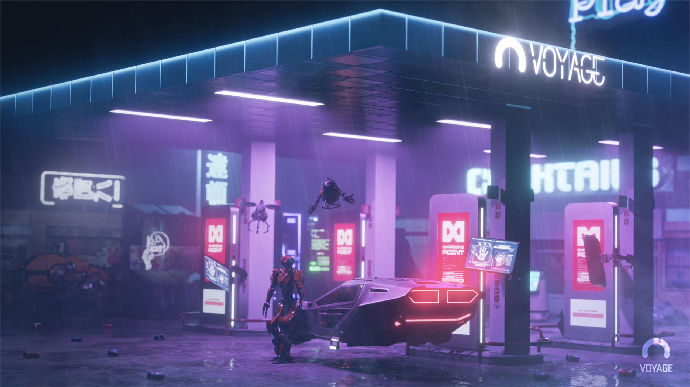

座右铭
骄傲的人喜欢见依附他的人或谄媚他的人，而厌恶见高尚的人。......而结果这些人愚弄他，迎合他那软弱的心灵，把他由一个愚人弄成一个狂人。
----斯宾诺莎
个人信息
- 姓名: 陈芮
- 学号:21104010818
- 专业：计算机科学与工程学院
- 学院：四川轻化工大学
- 电话：18208164737
- 邮箱：2033034771@qq.com
- 个性签名：把期待降到最低来的都是惊喜
自我介绍
我的爱好广泛。我喜欢学习，看课外书。因为知识能充实我的大脑，能增长我的的阅历，能丰富我的人生！ 我喜欢运动，踢球、打乒乓球、游泳是我喜爱的运动项目。而短跑是我的强项，100米13秒的成绩。虽然这个水平对高手来说是很差的成绩，但对于我来说是挺自豪的事情，因为我的个子比较小，爆发力比较强。踢球是我的最爱，每星期五，我都会跟班里同学一起玩。 我喜欢交朋友，但我不喜欢撒网式的交友。不论是异性还是同性，志同道合、有共同的兴趣、爱好的人，我跟他们比较容易相处，而且有个多共同的话题，他们也是我的好朋友。当然，什么样的人我都会跟他接触，一来能锻炼我的交际能力，二来能发展自己的人际关系。 人生路漫漫，在自己的青春岁月里，尽情释放自己的激情，挥洒自己的汗水，为自己的理想而奋斗吧！！！
我的爱好
-
旅游：在旅行中，可以到不同的地方感受当地的以前自己没接触过的文化，还能感受到形形色色的人和他们各不相同的生活方式，同时还能尝试到对自己来说是新的东西。旅游可以放松身心，开阔眼界，洗涤心境，陶冶情操，可以见识一个世界大好河山。
-
运动：适当的运动可以提高人的记忆力、注意力，使得大脑更灵活、身体更年轻。每天抽出半小时运动，不仅不会浪费时间，反而会使工作和学习完成的更出色、更迅速；也更容易集中注意力，不会轻易被外界事物所干扰。
-

听歌：多听音乐，能够让你更容易拥有幸福感，尤其是当你心情还不错的时候，音乐会增强你的这么愉快感，让你更加快乐。选择合适的音乐，安静地倾听，能够让你浮躁、烦躁的心情慢慢变得平静，人很多时候需要把新静下来，才能更好地去思考事情。
-
看电影：“电影发明之后，让人类的生命至少延续了三倍”。电影里有大千世界，可以代入体验各种无奇不有的生活。生命的长度太有限，唯有从电影中可以廉价的获得不同体验。